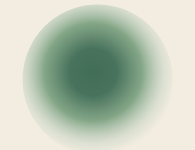
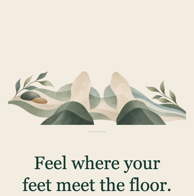
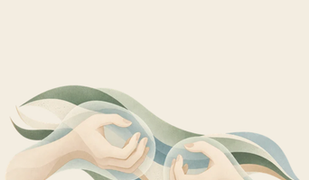
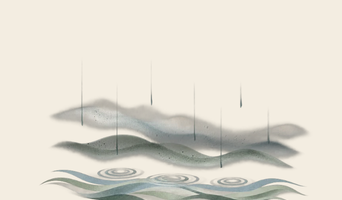
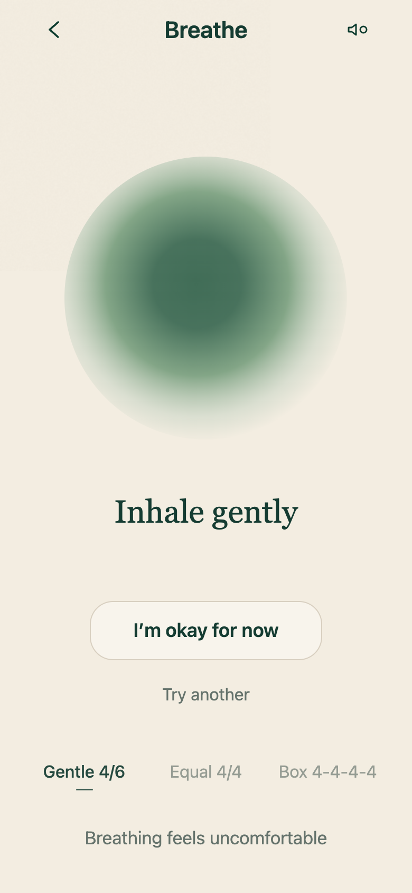
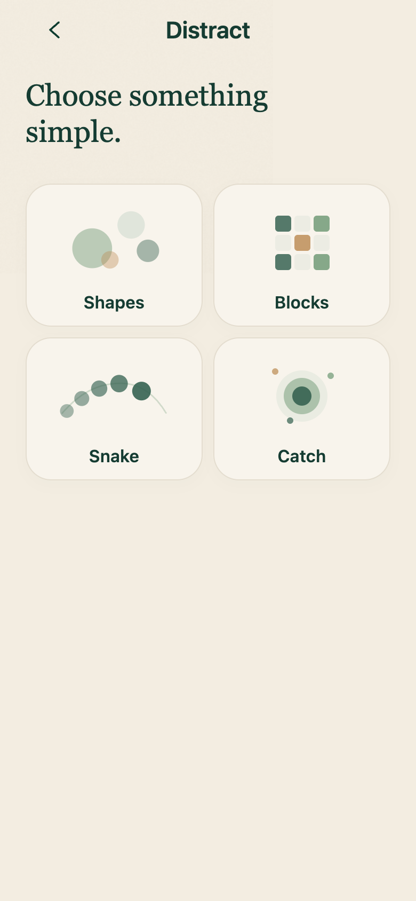
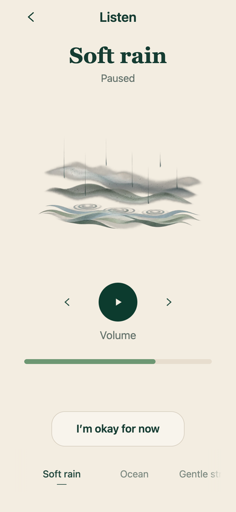
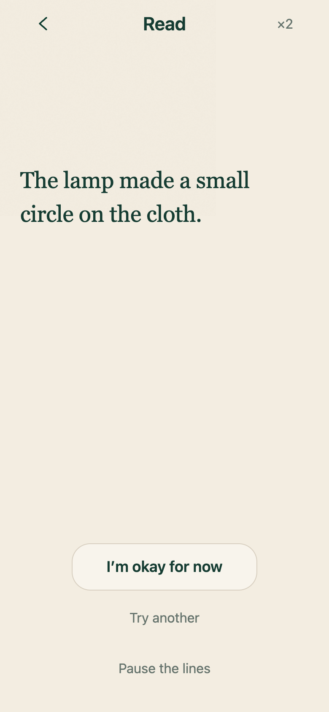

Breathe
Follow a gentle rhythm.
Back
You’re here.
Six gentle tools that start in one tap. No account, no lessons, works offline.
Free · Nothing you do leaves your phone
How Back works
Back does not ask you to explain everything first.
Breathe, distract, ground, move, listen or read.
No setup screen. No account. No instructions to study first.
Try another tool, call your person or return whenever you need.

Follow a gentle rhythm.
Give your attention a simple task.

Return to what is around you.

Release tension through small movements.

Follow a steady sound.
Let changing words hold your attention.
Inside Back
A gentle rhythm gives your attention one simple thing to follow. Nothing to perfect.
Breathe · gentle rhythm

Calm visual activities occupy the next few moments without scores, pressure or failure.
Distract · calm activities

Rain, ocean, forest and soft noise are stored on the device and ready offline.
Listen · offline sounds

Short changing fragments give your attention something neutral and gentle to follow.
Read · changing words

Private by design
Back does not require an account. Personal activity and patterns stay on your device. Core tools and bundled sounds work without an internet connection.
Back is a self-help tool. It is not therapy, a diagnosis, an emergency service, or a medical device.
Built with care
Back Plus
Back Plus is coming later. Today, every tool in Back is free to use. Emergency information, Extra Support and Call my person will always stay free.
Safety features stay outside the paywall: Emergency information, Extra Support, and Call my person.
Questions
Quiet support for the next difficult minute — private, immediate and ready offline.